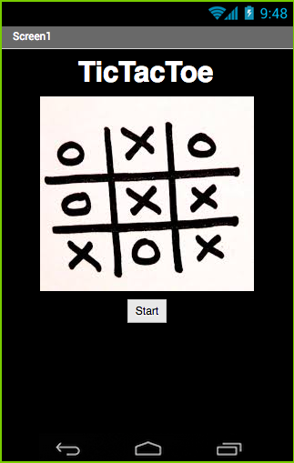
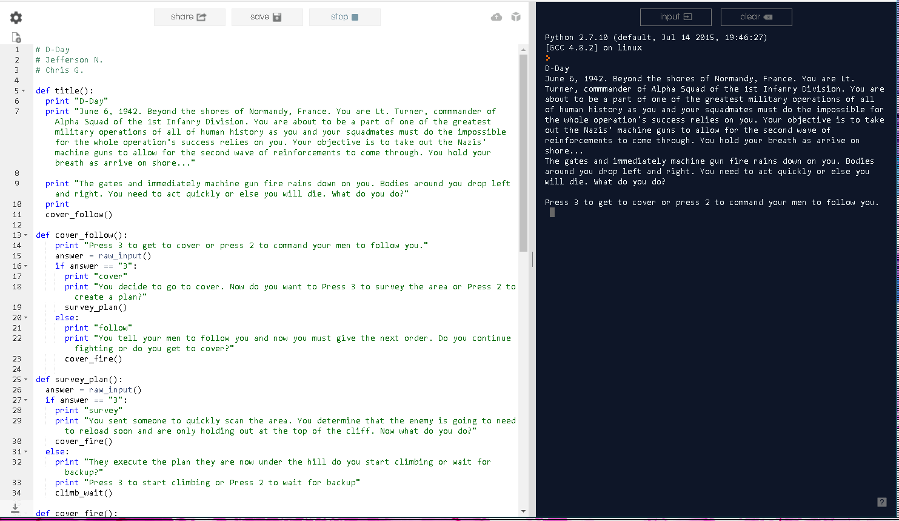
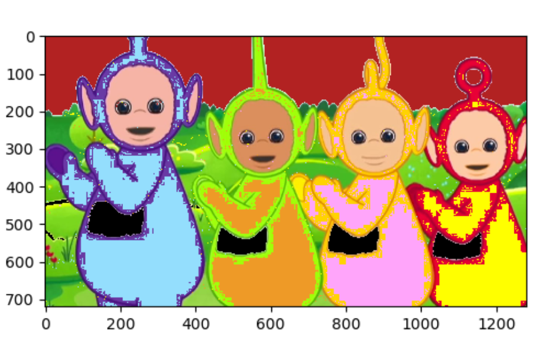

Bryan and I created a simple maze game. This is our first scratch project. The title is called Taco Bout A Maze because of the taco in the maze that acts on the point. The goal is to reach the end without touching the walls of the maze.

Taco Bout A Maze
Bryan and I also created through scratch, an interactive story. The story is from the Goldilocks and the Three Bears. Control Goldilocks as she explores the house of the family of bears.

Goldilocks and the Three Bears
Brett, Brant, and I created tic tac toe. We made it out of the M.I.T appinventor. We created a 4x4, 5x5, board and a scoreboard. All point tracking is done manually. And each time a player wins or ties, the players must also reset the board on their own.
Tic Tac Toe
Jefferson and I created a simple interactive story. The interactive story takes place during World War 2. We used python to create the ineractive story. The goal is to command your unit to clear the bunker holding back the allies on D-day.
World War 2 Interactive Story
Joshua and I for this project used the Telletubies. We changed the colors and their faces. For some reason we could get the changes between the colors and faces together. So we made it seperate. There are three different images the original, the face change, and the color change.
1.4.7 Image Artist